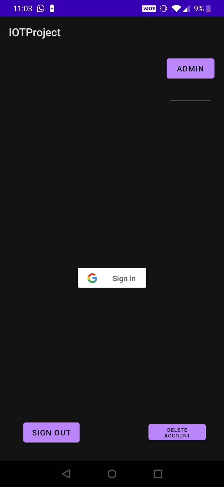
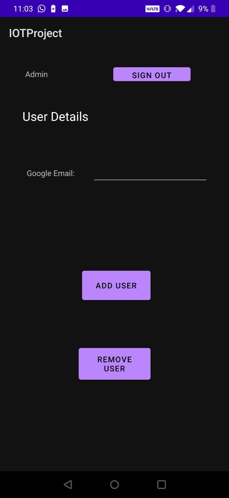
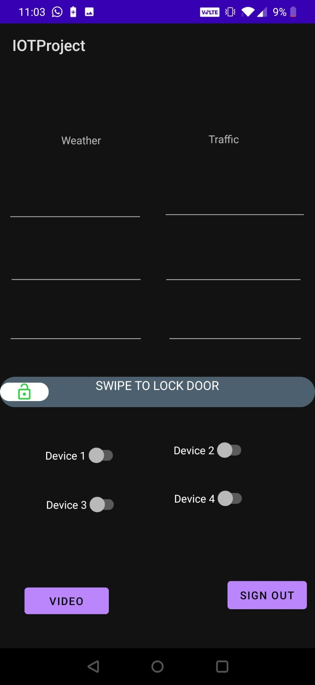
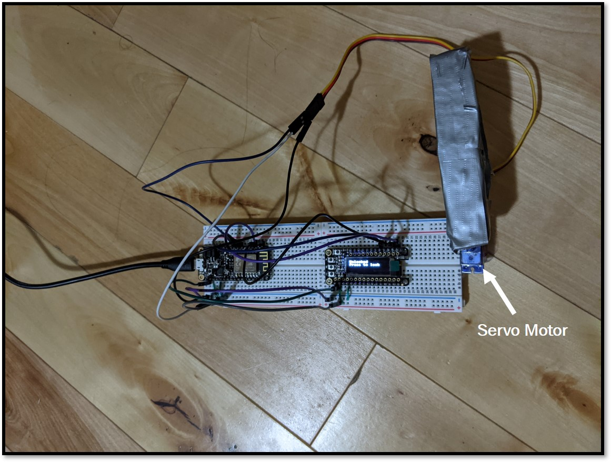
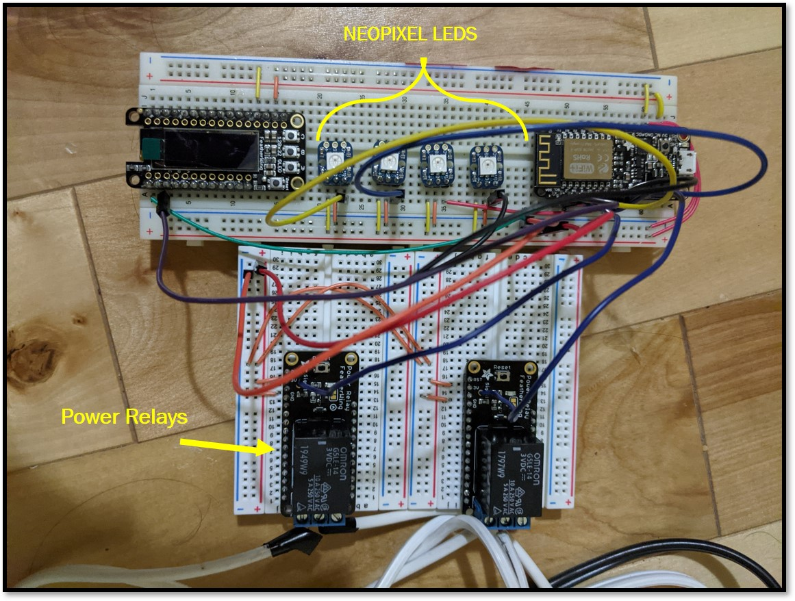
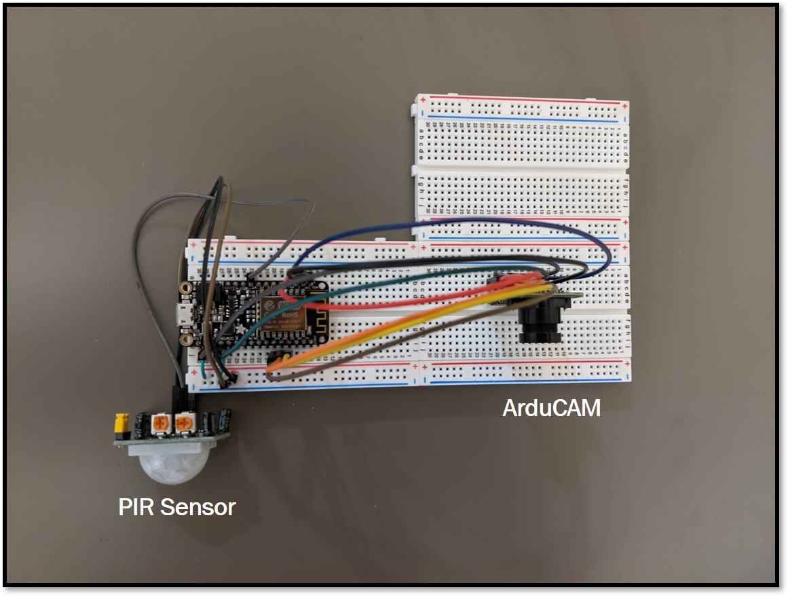
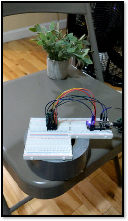
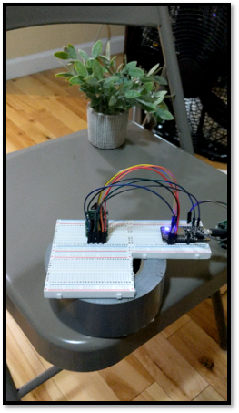

IoT Based Smart Lock and Home Automation System
The advent of the Internet of Things has given us the ability to incorporate embedded intelligence in many existing systems (such as lighting, thermostats, watches etc.) as well as invent new devices and applications. Embedding devices or other systems in the home with the ability to sense, ‘think’, and control not only improves the users’ ease and quality of living, but can also reduce human errors and inefficiency.
Our project takes a ubiquitous everyday object- a door lock- and enables it to be controlled via a smartphone application, as well as providing additional functionalities of automation, alerting, and monitoring.
A WiFi microcontroller (the Adafruit Feather Huzzah) is used to control the lock/unlock mechanism with a servo motor, power devices on/off with relays, sense motion with a PIR sensor, and capture potential guests/intruders using a camera. The microcontroller is also responsible for communicating with the smartphone(s).
The smart lock allows authorized and registered users to lock or unlock their door and control devices using a smartphone application when they are in the home. Additionally, it can provide weather and traffic updates when the user leaves the house.
Motivation
The Smart Lock and Home Automation System provides additional functionality to a user’s smartphone device by streamlining manual processes and automating them through an accessible app. Our aim was to maintain security, improve ease, and save time for the users while giving them more control over and information about their home and its immediate surroundings.
With our system, only administrator-authorized users can unlock and lock their door through a secure app with the touch of a button. Registered users can automate their home appliances and devices by enabling them to be turned on and off via the application once they enter the home. This improves ease while maintaining security without the need for a physical key.
The system also instantly provides information about the user’s local traffic and weather in the app when it is sensed that they are leaving home. This information can help the user plan their outing before they have gone too far from home, saving time and avoiding inconvenience.
An additional feature of our lock captures and stores an image of anyone who triggers the motion sensor and waits or lingers outside the door for some time. This image can be accessed by the user through the smartphone app. This can enable users to monitor potentially suspicious activity outside their door remotely, which increases security and gives the user more access to the activity near their home from anywhere.
System
The system comprises of three microcontrollers: one microcontroller controls the unlock/lock mechanism, APIs and data management, one is responsible for the devices and LEDs as a visual indicator of the current device status, and the third runs code for the PIR sensor, camera and image transfer.
The smartphone application allows the user to create a secure ID and allows authorized users to control the unlock/lock feature and turn devices on/off when logged in to the app at home. The user also receives relevant weather and traffic notifications when they leave the house based on their location. If someone is sensed to be waiting or lingering outside the door, an image is captured and stored. This image is accessible to the user through the app.
Architecture
Technical Components
The following components were used in our system:
- ESP8266 Featherwing Huzzah
- OLED 128x32
- PIR sensor
- Servo motor
- NEO Pixel LEDs
- Power relays connected to devices (lamp and smartphone charger)
- ArduCAM 0V2640
Prototype
Smartphone Application
The smartphone application allows users to securely login with a valid Google ID. An administrator account is able to add/remove authorized users to be able to access the functionalities of the system through the app.
Once signed in, the user can use the swipe button to lock/unlock the door and toggle the button for connected devices to turn them on/off.
When the user locks their door to leave the house, local weather and traffic updates are received and displayed on the screen. This contains information about the temperature, weather predictions, traffic congestion, and nearby road closures.
A button can be used to access the last image captured by the camera when the motion detector senses the presence of a possible guest or intruder lingering outside the door.
  Smart Lock and Home Automation Prototype
The lock mechanism is controlled by a servo motor. When the system is initialized, it automatically locks the door. On the app, the user can use the swipe function to lock and unlock the door, as well as check the current status of the lock. If the user is indoors, the lock can also be controlled using a button, with a screen displaying the current lock status. If the system is locked through the app, indicating that the user is leaving the house, the app updates the user on current local traffic and weather information fetched and sent to the app by the microcontroller. The lock mechanism can be seen in the image below.
The app can also control devices that the user specifies. Each device is represented by an LED. Green lights indicate that a device is turned on while a red light indicates that a device is turned off. In our demo, we added two power relays which actuated two common home appliances- a lamp and a phone charger- and paired two of the LEDs with them, while the other two LEDs are simply indicative of additional devices.
The PIR sensor was used to detect motion of a person that is outside the user's door. If a person lingers outside for an extended period and the sensor passes a threshold of triggers, the camera is triggered and captures an image. This image is stored and sent when the app requests to view. Due to the limited storage size of our microcontroller, only one image is taken at a time.
Results and Future Scope
We were able to demonstrate our Smart Lock and Home Automation System working together with our smartphone application. The following segments show the use of our Smart Lock and Home Automation System. Due to the constraints of our physical testing environment as well as having to build the system individually in small parts, we filmed our system's functionality separately.
The system was successfully able to add, authorize, and remove registered users for the application through an administrator account, with unauthorized users not being allowed access. Once logged in, users were successfully able to lock and unlock the door as well as power desired devices with ease.
The system could also reliably sense when the user was leaving and instantly display the local weather and traffic information in the app.
We were able to detect the motion of someone waiting outside the door and trigger the camera to capture and store a single image based on the presence of a possible guest or intruder, however we were unable to reach our desired goal of being able to alert the user in real-time and allow them to access a video feed- there is a 'video' button in the app- of the camera's view. This was due to a combination of memory issues and trouble in transmitting the image file as is.
The future scope for this project includes successfully implementing the camera alert and video streaming feature. Additionally, for a family home, parent users can be notified when their children access the lock and devices. Using some of the individual users' information through their registered account, such as to-do lists or calendars, we can also personalize the updates they receive and allow them to customize the devices and features they access.

Registration- The user must sign in order to access the functionality of the app. A user can register in the app by entering 'Admin' mode. Once in Admin mode, they can select or remove a user that has a valid google email. After a user has registered, they can sign into the app. Once the user signs in, the home screen of our app becomes visible The home screen shows all the features of our app, including the swipe feature to lock/unlock and the buttons to turn on/off the devices.
Notification- Once the user arrives to the home screen, they have access to all the features of the system. Another feature is our notification system. When a user locks the door within the app, the app updates the home screen to display the current local weather and traffic information.

Connected Devices- Four LEDs represent connected devices on the systems. Two of the four devices are represented using power relays. Green lights indicate 'on' and red indicates 'off'. In this image, Device 1 is connected to a phone charger while Device 2 is connected to a lamp.

 

Motion/Image Capture- If someone is right outside, the sensor prints out ‘Motion Detected’. When the motion sensor reaches its threshold, the sensor prints out ‘Someone is Outside’. The camera is then triggered, and an image is taken. The user can access this image by obtaining the image from the microcontroller's memory.
References
- [1] https://www.hackster.io/arun8/iot-smart-door-simplest-method-c6c7ca
- [2] https://iotdesignpro.com/projects/iot-based-smart-door-lock-system-using-nodemcu
- [3] https://randomnerdtutorials.com/micropython-relay-module-esp32-esp8266/
- [4] https://dzone.com/articles/security-sensor-tutorial-using-pir-sensor-and-esp8
- [5] https://randomnerdtutorials.com/door-status-monitor-using-the-esp8266/
- [6] https://www.instructables.com/Basic-Security-with-ESP8266/
Our Team
Ananye Pandey
Ananye Pandey is an Electrical Engineering Master’s student specializing in Data Driven Analysis and Computation.
LinkedIn ProfileNiabelle Thelemaque
Niabelle Thelemaque is an Electrical Engineering Master’s student specializing Wireless and Mobile Communications.
LinkedIn ProfileEsha Trivedi
Esha Trivedi is an Electrical Engineering Master’s student specializing in Data Driven Analysis and Computation.
LinkedIn ProfileContact
Ananye Pandey: ap3885@columbia.edu
Niabelle Thelemaque: net2128@columbia.edu
Esha Trivedi: et2633@columbia.edu
Columbia University Department of Electrical Engineering
Instructor: Professsor Xiaofan (Fred) Jiang